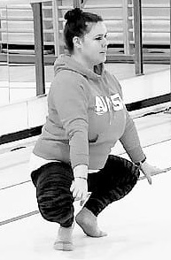

9, rue Jean Racine
Pessac, France
Email
jessica.fournier59@gmail.com
Ancienne gymnaste, j'ai, pendant des années, pratiqué cette discipline en compétition. J'ai donc pu acquérir rigeur et combativité. Passionnée par cette discipline, j'entraîne désormais des gymnastes plusieurs fois par semaine. Je suis également juge national. En dehors de la gymnastique, je fais beaucoup d'activités manuelles (couture, bricolage).